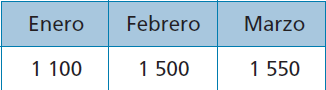
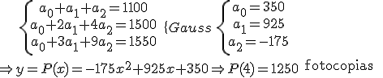
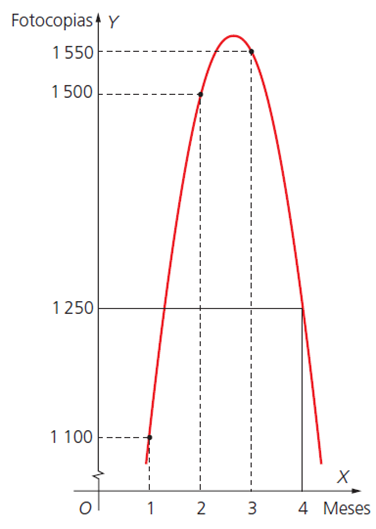

Funciones.Interpolación
cuadrática
Cuando a partir de los puntos (xi, yi) dados observamos que no se ajustan a una recta, entonces la interpolación lineal produce grandes errores.
Para solucionar este problema usamos la interpolación cuadrática. En este caso, con tres puntos: (x0, y0), (x1, y1), (x2, y2)
La función de interpolación cuadrática sería: y = P(x) = a2x2 + a1x + a0
donde a0, a1 y a2 se calculan al resolver el sistema que obtenemos al sustituir los 3 puntos.
Ejemplo. El gasto en fotocopias en una oficina viene dado por los siguientes datos durante los tres primeros meses del año:
 Deduce el gasto de fotocopias probable para el mes de abril.
Tendríamos que resolver el sistema:


Ejercicio. En España, en el año 1993, la inflación en los meses que se indican fue:
| julio | septiembre | octubre |
| 4,9 | 4,3 | 4,6 |
Haz sendas estimaciones para los meses de agosto y noviembre.
Soluciones: agosto 4,4; noviembre 5,3
Obra publicada con Licencia Creative Commons Reconocimiento No comercial Compartir igual 3.0